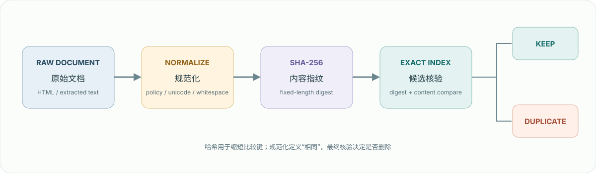
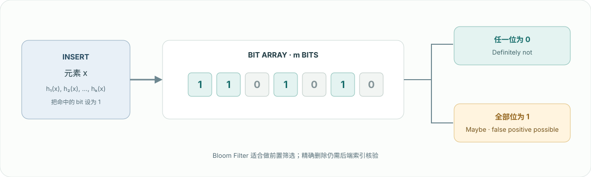

MODULE 07 / LLM DATA ENGINEERING
精确去重
从内容指纹到 Bloom Filter：理解“完全相同”的定义、哈希碰撞、单边误判与可扩展的精确校验。
当两个网页正文完全一样，怎样用很少的内存识别重复？答案是内容指纹；但“哈希相同”与“内容数学上相同”不是同一个命题，Bloom Filter 也不是一个零误差集合。
重复不是小问题：它会改变训练样本的权重
网页聚合、镜像、模板和跨站转载会让相同片段重复出现。重复内容不只是浪费 token 预算，还可能放大某些稀有字符串，使模型更容易记住并逐字输出。Lee et al. 在 ACL 2022 的研究中发现，所研究语言模型数据集含有大量近重复样本与长重复片段；他们提出的去重方法降低了训练数据记忆文本的生成频率，并减少了 train–test overlap。论文摘要中的数值属于该研究的模型和数据设置，不能直接外推成所有语料的固定收益。
精确去重的第一步不是选 SHA-256，而是定义“相同”：原始字节相同？Unicode 规范化后相同？空白折叠后相同？段落相同？每一种规范化都会改变等价类。
内容指纹：把长文本映射为固定长度键

对字节串 \(x\)，哈希函数给出固定长度摘要 \(h(x)\)。实际工程常使用 SHA-256 作为内容指纹。若两个摘要不同，可以确定两个输入不同；若摘要相同，工程上通常视为极高置信度的相同候选，但严格意义上的零碰撞保证仍需要比较原始规范化内容。
import hashlib
def content_fingerprint(text: str) -> bytes:
# 这里只做 Unicode NFC；不擅自折叠大小写或空白
import unicodedata
normalized = unicodedata.normalize("NFC", text)
return hashlib.sha256(normalized.encode("utf-8")).digest()
def exact_duplicate(candidate, store):
import unicodedata
normalized = unicodedata.normalize("NFC", candidate)
digest = content_fingerprint(normalized)
# store[digest] 保存规范化文本或可复核的内容位置
return digest in store and store[digest] == normalized如果只保存摘要，碰撞风险在实践中可以极低，但不能把“密码学上极难碰撞”表述成“数学上不可能”。若数据有法律、审计或高完整性要求，摘要命中后还应比较内容，或比较长度与二次摘要后再做最终校验。
Bloom Filter：先回答“可能见过吗？”
Bloom Filter 用一个 \(m\) 位数组和 \(k\) 个哈希位置近似表示一个包含 \(n\) 个元素的集合。插入时把对应位设为 1；查询时只要有一个位为 0，就一定不在集合中；如果所有位都是 1，只能说“可能在集合中”。
| 查询结果 | 含义 | 风险 |
|---|---|---|
| 至少一位为 0 | 确定未插入 | 基本插入型 Bloom Filter 不会产生 false negative |
| 所有位为 1 | 可能已插入 | 可能 false positive：一个新元素被误判为“可能存在” |
在近似独立、均匀哈希的假设下，插入 \(n\) 个元素后，一个 bit 仍为 0 的概率约为 \(e^{-kn/m}\)。因此，未插入元素被误判为“可能存在”的概率近似为：
固定 \(m,n\) 时，最优哈希函数数约为 \(k^*=(m/n)\ln 2\)。若目标假阳性率为 \(p\)，可反推位数组规模 \(m\approx -n\ln p/(\ln2)^2\)。这些是经典近似设计公式；实际误判率还受哈希实现、容量估计、并发插入和数据分布影响。

流式精确去重的两层结构
- 为每条文档按明确策略规范化，并计算内容指纹。
- 先查询 Bloom Filter。若为 definitely-not，写入精确索引并更新 Bloom Filter。
- 若为 maybe，到精确索引中检查摘要；命中后再按要求比较内容。
- 记录保留代表的策略：最早来源、质量优先、时间优先或确定性排序。
- 把重复样本的来源和 doc_id 写入排除清单，避免只留下“删除了多少”而无法审计。
代表样本选择是去重算法的一部分。保留随机一条、最早一条或质量分最高的一条，会产生不同的数据分布；不能在算法说明里只写“保留一个副本”而省略策略。
交互练习：内存预算怎样影响误判率？
下面使用公式估算 Bloom Filter 的设计参数。它是理论近似，不是对真实部署误判率的测量。
本章参考资料
- Bloom (1970), Space/Time Trade-offs in Hash Coding with Allowable Errors.
- Christensen, Roginsky & Jimeno, A New Analysis of the False-Positive Rate of a Bloom Filter，讨论经典近似公式的假设。
- Lee et al. (2022), Deduplicating Training Data Makes Language Models Better.
- Wenzek et al. (2020), CCNet，§3.2 段落级规范化与 SHA-1 前 64 位哈希。